A B2B logistics platform operating across the UAE, India and the Middle East, managing freight, customs clearance and last-mile delivery for enterprise clients.
In Excel, with no structure or version control.
Problems were discovered only when something went wrong.
Zero feedback. Rejections arrived via email.
14 flat items, no grouping under product growth.
I worked from PRDs and live business workflows in a cross-functional team, owning every step from research to QA.
“Ops teams toggled between 4 tools to track one shipment.”
→ Fragmented workflow across tracking platforms.
“Quotation was done in Excel with no pricing guardrails.”
→ Manual pricing errors and compliance risks.
“Document rejections came via email with no in-app feedback.”
→ Delayed document processing and resubmission cycles.
“Navigation had 14 flat items, so discoverability broke.”
→ Users lost in the information architecture.
Benchmarked against Flexport, ShipBob and Freightos on the capabilities operations teams rely on.
| Capability | Hexalog | Flexport | ShipBob | Freightos |
|---|---|---|---|---|
| Real-time Tracking | ● Yes | ● Yes | ● Yes | ● Yes |
| Automated Pricing | ● Yes | ● Yes | ✕ No | ✕ No |
| Navigation UX | ● Yes | ✕ No | ● Yes | ✕ No |
| Document Management | ● Yes | ● Yes | ✕ No | ✕ No |
| API Integration | ● Yes | ● Yes | ● Yes | ● Yes |
Users took 2+ weeks to learn navigation. No grouping. No hierarchy.
Grouped by user workflows: “What am I trying to do?”, not “Which module owns this?”
Last 60 days, real-time data. Try it: click a metric to see where it lands.
Collapsed three manual steps into one click. You land pre-filtered, with the filter visibly applied.
Zero in a time-boxed metric reads as inactivity, so it auto-swaps to the all-time total with an adjusted label.
Only label and value change, so the swap never feels bolted on. It feels native and seamless.
Bookmarkable, shareable filtered views. The applied filter survives browser back/forward, preserving context.
Bulk-load shipment data instead of manual row-by-row entry.
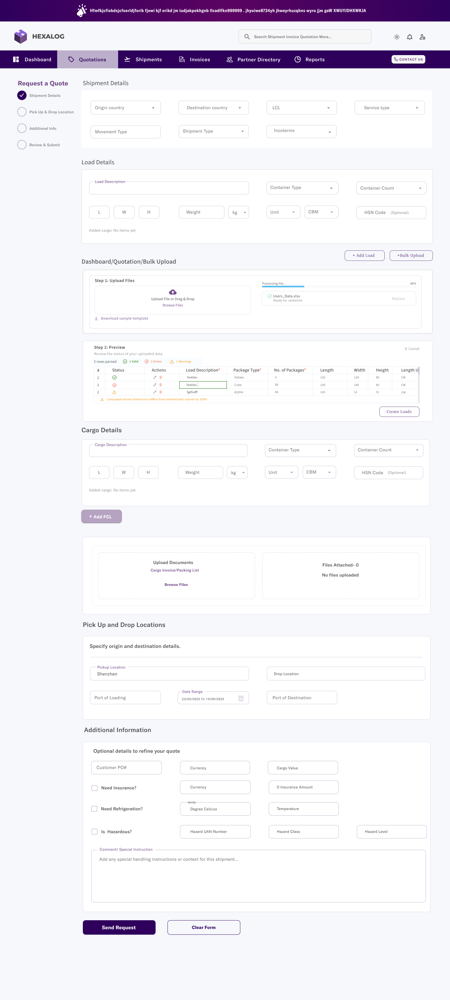
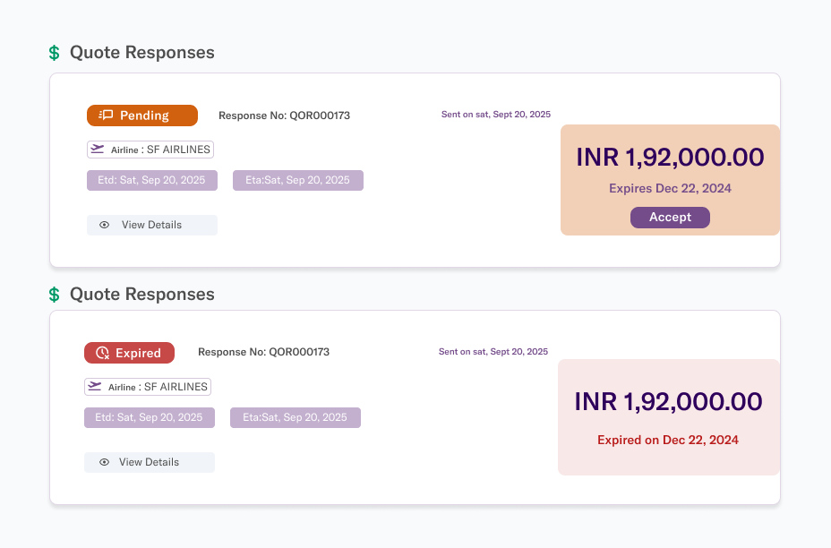
Pending responses carry the price, expiry and a single Accept action. Expired ones keep the price visible but lock the action, so nothing is lost.
Real-time shipment status with timeline milestones, replacing four separate tools.
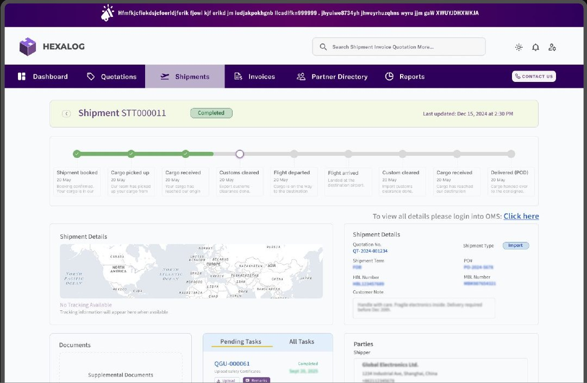
Every milestone, as it happens.
Visual tracking across all shipping modes.
AI-powered delivery forecasting with confidence scores.
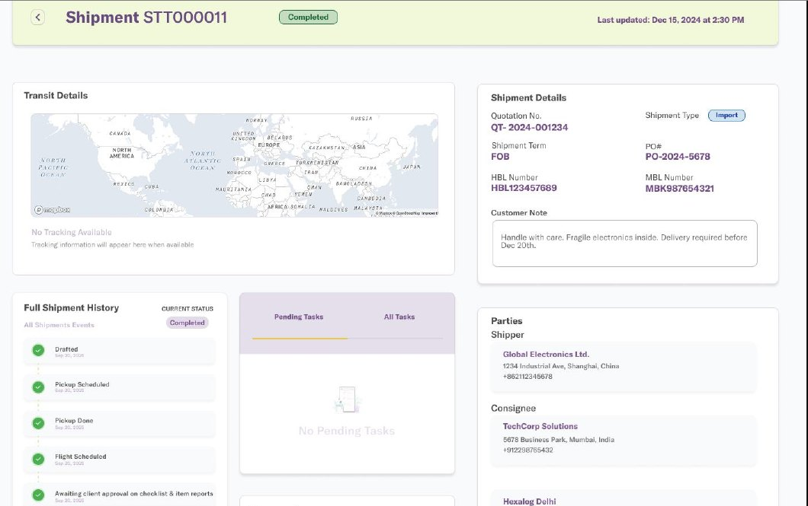
The ERP rebuilt its status model: 11 new states, gated by service type, from 4 to 10 steps.
Old and new shipments must coexist with zero visual regressions.
The timeline component makes no assumptions about step count or labels.
25+ reusable components in a system that scaled across 8 modules, so every new feature stays consistent.
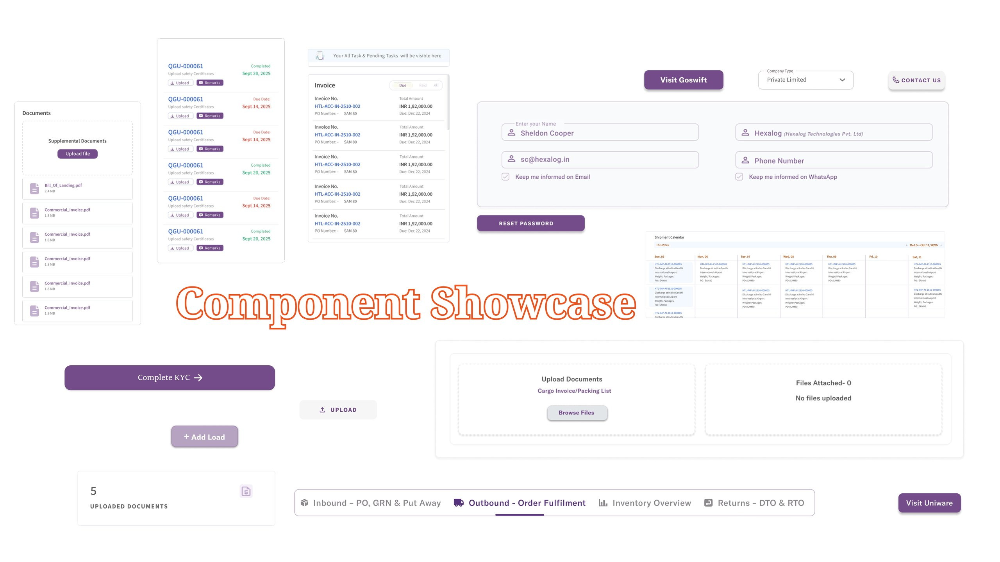
Onboarding, KYC, warehouse, quote plans and login. Pick a screen; long pages scroll inside the frame.
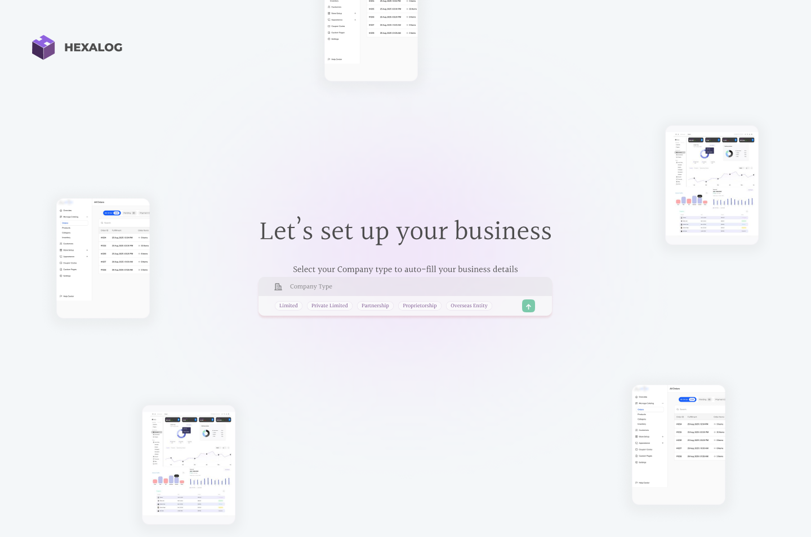
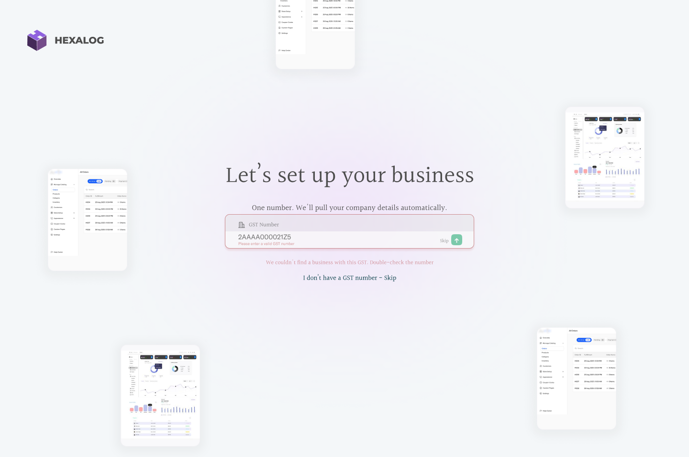
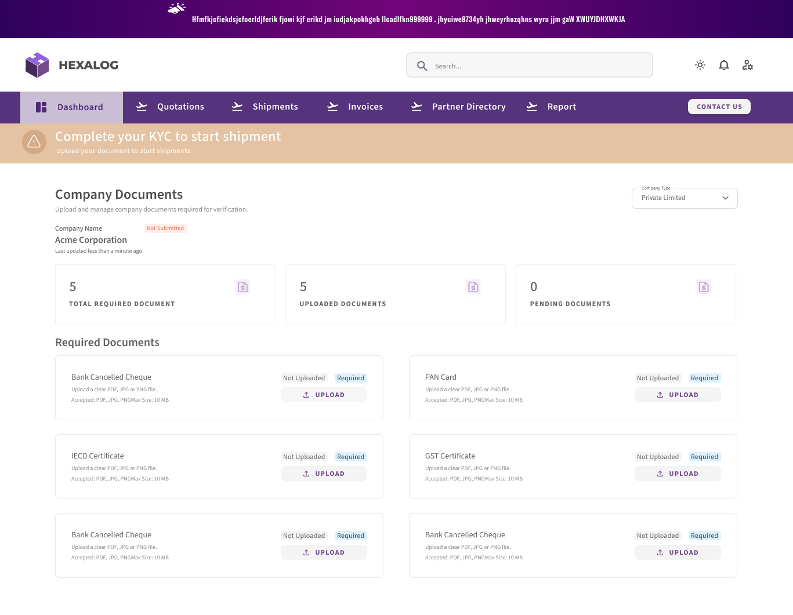
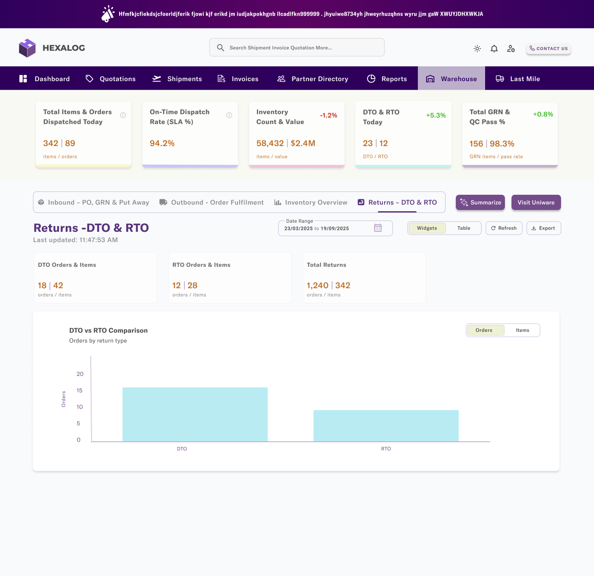
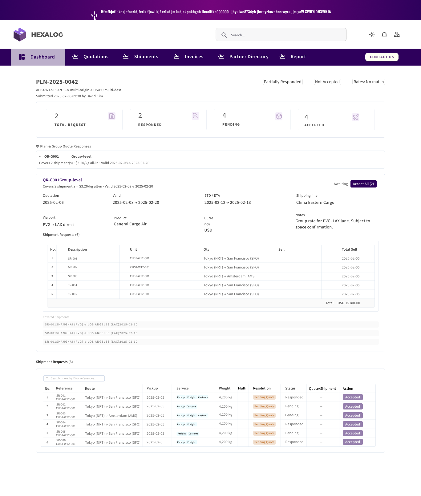
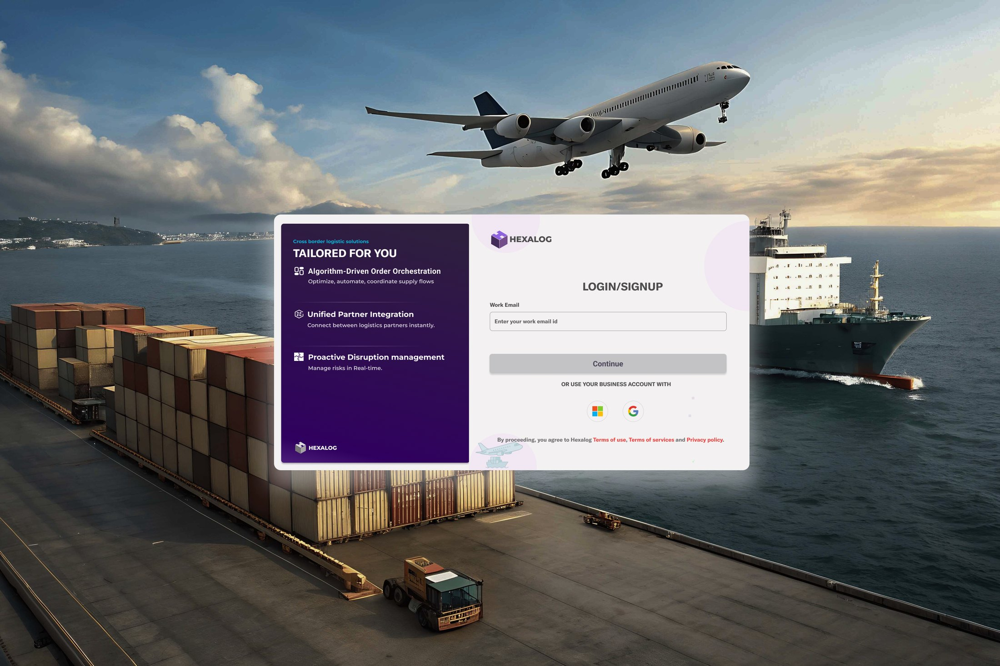
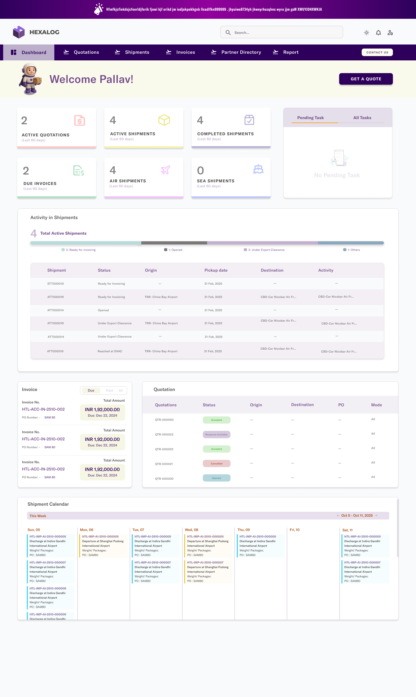
| Decision | Pain | Choice | Outcome |
|---|---|---|---|
| Global Navigation | High cognitive load due to nested menus. | A flat, persistent sidebar architecture. | 40% reduction in time-to-task completion. |
| Color System | Low-contrast interaction states in accessibility audits. | Electric Indigo with a systematic 4.5:1 ratio. | WCAG 2.1 AA compliance across all platforms. |
| Data Grid Density | Excessive whitespace made vertical scanning difficult. | Tightened row height and added subtle zebra striping. | 25% more data visible per viewport. |
| Typography Scale | Inconsistent header sizes weakened hierarchy. | A strict Major Third (1.250) scale. | Clear, consistent visual hierarchy. |
| Empty States | Dead-ends caused drop-off after onboarding. | Blank screens replaced with actionable starter templates. | 15% lift in Day-7 retention. |
Steps into any account, exactly as the customer sees it. Every action logged with identity, org and timestamp. Zero customer footprint.
A read-only mirror. Controls disabled, tooltips only. Invisible to the customer.
The reference state: the standard view everything else mirrors. No trace, no banner, no log: that’s what makes invisibility meaningful.
13 PRDs owned end-to-end, across 9 modules. Contributed to a successful seed-stage funding round.
The shipment-status migration.
Bulk upload + zero-state fallback.
Super User + Support Viewer.
Design system → live migration.
Here’s what I’d design next, starting with what’s already on the roadmap.
Parsing customer shipping documents directly (Phase 3 of the Bulk Load Upload PRD). Side-by-side extracted vs original data, with field-level confidence and human override.
Flagging delay risk on the tracking timeline before a customs hold or missed connection happens, gated by a confidence threshold to avoid alert fatigue.
A query like “Show me all DXB–BOM customs holds this week” against the warehouse and last-mile dashboards. The interpreted query is shown above results, with an edit option.
Opening Hexalog on a phone used to hit a “Desktop access required” wall. Now 24 screens are rebuilt for mobile, with tables that swipe while the job number stays put.
Live product flow: account verification, setting a password, and onboarding the business.